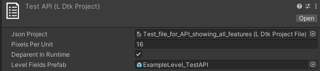
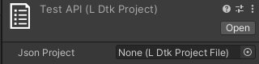

Root Section
The root area has some general settings.

Json Project
This is the field where the .ldtk file should go.
Initially it will look like this:

Once it's assigned, all of the other information will be available to fill in.
Pixels Per Unit
This pixels per unit number dictates what all of the instantiated Tileset scales will change their scale to, in case several LDtk layer's GridSize's are different from one another. Set this as the base scale to work from in regards to scale.
De-parent In Runtime
If this is set on, then the project, levels, and entity-layer GameObjects will have components that act to de-parent all of their children on start.
This results in increased runtime performance by minimizing the hierarchy depth.
Keep this on if the exact level/layer hierarchy structure is not a concern in runtime.
Article about this particular optimization
Level Fields Prefab
This field stores a prefab that would have a script for field injection, exactly like entities. This prefab is instantiated as the root GameObject for all levels in the build process.
This field only appears if any LDtk field instances are defined in any levels. Learn more about field injection at the Entities Section.